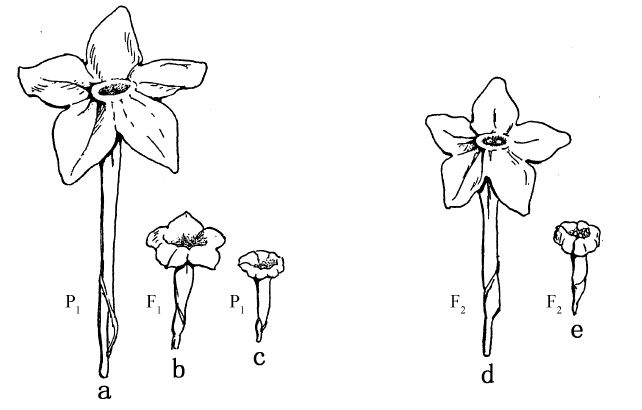
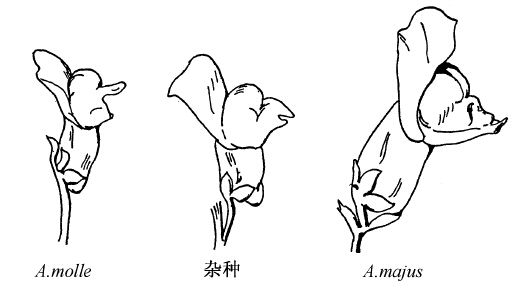
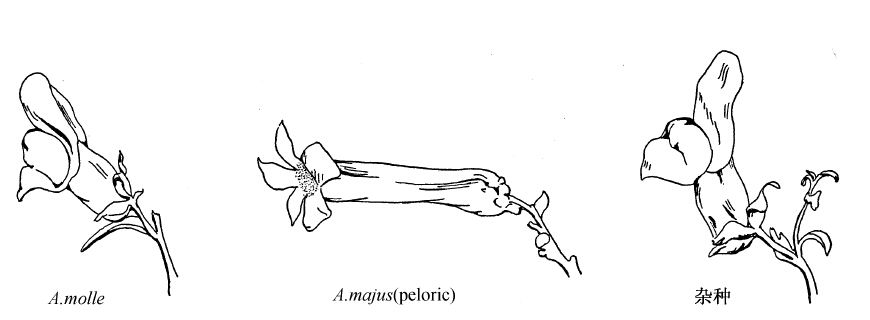
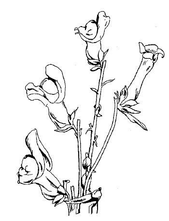
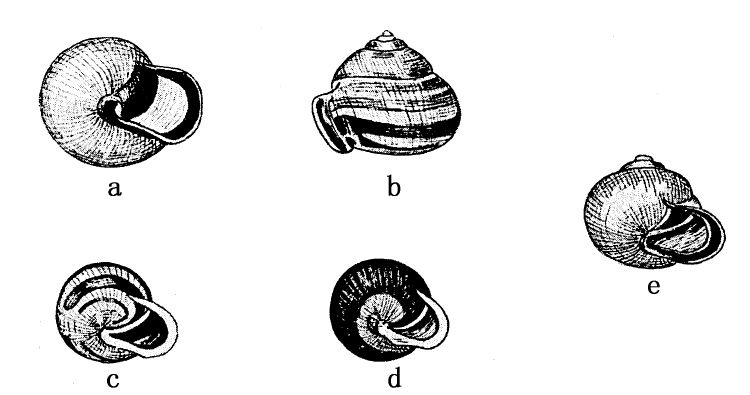
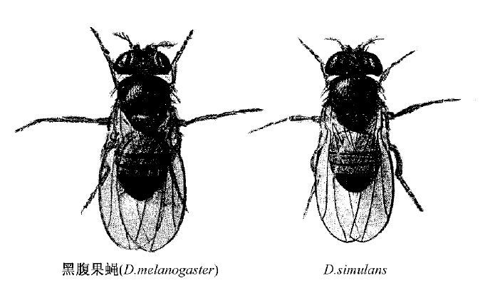
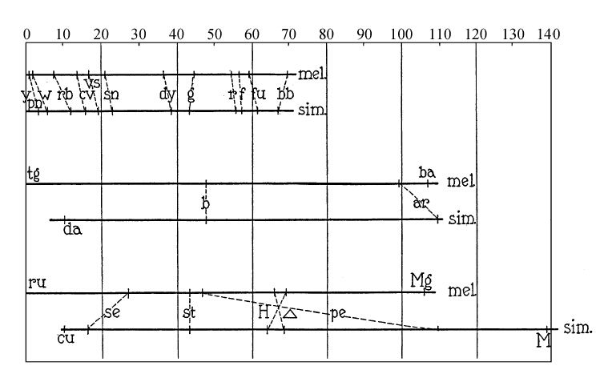
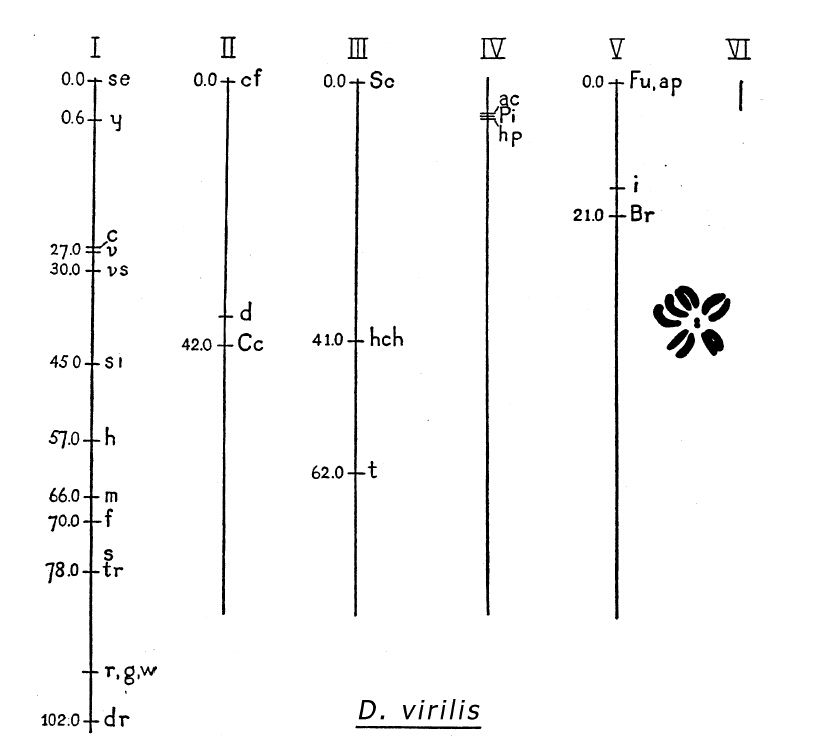
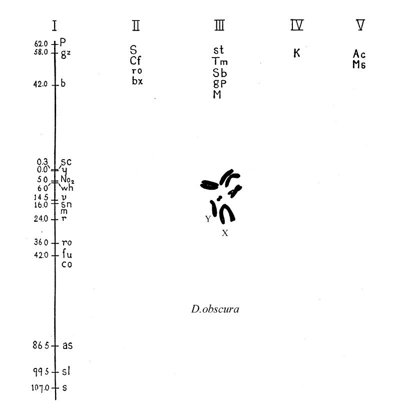

第7章 同属异种中基因的位置
从果蝇方面的证据，可以看到亲缘极近的物种，其同一染色体上的基因可以有不同次序的排列。类似的染色体群，有时可能含有不同组合的基因。既然重要的是基因，而不是染色体本身，所以遗传组成的最后分析，一定决定于遗传学，而不决定于细胞学。
20世纪早期的那不勒斯动物研究所外景图。那不勒斯是意大利中南部一个海滨城市，该动物研究所由德国动物学家Anton Dohrn1872年创立，是世界生物学家向往的圣地。
德弗利的突变论，除了第5章讨论过的特殊解释以外，又假设“初级”物种是由大量相同的基因组成；并认为初级物种之间的差异，是由于这些基因以不同方式重新组合所致。近来研究同一属的各种相互杂交，已经获得了有关这项理论的一些证据。
研究这个问题的最容易的方法应该是让不同的物种杂交，并在可能范围内决定其是否皆由同样多的同型基因所组成，但是这里却碰到了几种困难。许多物种不能杂交，能够杂交的物种中又有一些产生不孕性杂种。不过也有少数物种可以互相杂交，并且产生可孕性的杂种。这里又发生另一种困难，即如何鉴定两个物种中互为孟德尔式成对的性状，因为两个物种所借以区别的各种差异，都有赖于很多个因子。换句话说，在断然不同的两物种之间，很少看到任何一个差异是起源于一个分化基因的。因此必须采用一个或两个物种中新出现的突变型差异，来提供必要的证据。
已经有几个植物例子，至少也有两个动物例子，其突变型物种同另一物种杂交，产生了可孕性后代。这些后代自交或者回交，结果在决定不同物种之间基因的等位关系上，提供了唯一的决定性的证据。
East把两种烟草（Nicotiana Langsdorffii同N.alata）进行杂交（图53）。一种开白花，为突变型。杂交二代里虽然有许多性状变化很大，但该代有四分之一的植株仍然开白花。可知一个物种的突变基因，对于另一物种的基因，像对于同物种的正常等位基因一样，采取同样的行动。

图53 Nicotiana Longsdorffii同N.alata两种烟草杂交（仿East）：
a和c.示两种原型花；b.示杂种型花；d和e.示孙代两类回原型花
Correns用Mirabilis Jalapa和M.longiflora两种紫茉莉杂交。选用了Jalapa（chlorina）的一个隐性突变体。第二代约有四分之一的植株重显这种性状。
Baur使Antirrhium majus同A.molle两种金鱼草杂交（图54）。至少选用了A.majus的五种突变型，各该性状都依照预计数字在第二代里重现（图55、56）。

图54 Antirrhinum molle和A.majus两种金鱼草及其杂种型（仿Baur）

图55 A.molle的两侧对称的花朵同A.majus的peloric型杂交后，产生右边的野生型杂种（仿Baur）
Detlefsen用Cavia porcellus同C.rufescens两种豚鼠杂交。雄性杂种无生殖力。使雌性杂种同C.porcellus突变型雄豚鼠交配，突变型性状共计七种。突变性状的遗传和在C.porcellus里的遗传方式一样。这项结果又表明了两个物种含有一些相同的基因点。不过因为还没有研究过和porcellus突变性状相类似的突变体，所以这些结果并不能证明两物种中存在着相同的突变体。

图56 图55中杂交第二代的花朵类型（仿Baur）
Lang在Helix hortensis同H.nemoralis两种野生螺杂交实验中（图57），描述了一个极其明确的例子，其中一个物种的性状对另一物种的性状所表现的显隐关系，是和同一物种内同一对性状的显隐关系一样的。

图57 a.蜗牛Helix nemoralis，00000，黄色，Zurich型；b.同上，
00345，带红色，Aarburger型；c.典型的H.hortensis，12345；d.同上；e.杂种00000（仿Lang）
有两种果蝇，外形极相类似，以致一度被认为同种。一种现在称为黑腹果蝇（Drosophila melanogaster），另一种名为Drosophila simulans（图58）。仔细检查，发现两种之间，有许多不同之点。两种不易杂交，所生的杂种完全不孕。

图58 左侧为黑腹果蝇（Drosophila melanogaster），右侧为D.simulans；两者都是雄蝇
在Drosophila simulans里已经找到了42种突变型，分属于3个连锁群。
Simulans种的隐性突变基因中，有23种，在杂种体内，仍为隐性，黑腹果蝇的65种隐性突变基因，在杂种体内，也已经证明是隐性。由此可见，每一个物种都含有另一个物种内各个隐性基因的标准型基因或野生型基因。
又测验过16种显性基因。除了一种以外，其余的基因，在杂种中，同在本物种中，产生了似乎相同的效果。由此可见，一个物种的16种正常基因，对于另一物种的显性突变基因，呈隐性作用。
Simulans的突变型同黑腹果蝇交配。在所检验的20个例子里，已经证实了两个物种的突变性状是相同的。
这个结果，确定了两个物种的突变基因的同一性，也使人们能够发现这两型突变基因是否位于同一个连锁系内，以及是否在各个系内占着同样的相对位置。图59用虚线表示Sturtevant所找到的相同的突变基因点。在第一号染色体上，非常一致。在第二号染色体上，只决定了两个相同的基因点。在第三号染色体上，还不十分一致，这可能用下一假设来解释，即假设第三号染色体上有一大段倒置，于是相应的基因点的次序便颠倒起来了。

图59 上图示黑腹果蝇（Drosophila melanogaster）和simulans果蝇第一染色体或X染色体上相同的突变基因相应的基因点（注：y＝黄体 pn＝梅子色眼 w＝白眼 rb＝红玉色眼 cv＝缺横脉 vs＝翅膨大，脉屈曲 sn＝焦毛 dy＝微黑翅 g＝石榴石色眼 r＝退化翅 f＝叉毛 fu＝合脉b＝短毛——译者注。）；中图示第二号染色体上相同的基因点（注：da＝小眼错乱＝黑体 ar＝腹扭转a＝气球状翅——译者注。）；下图示第三号染色体上相同的基因点（注：ru＝粗糙状眼 cu＝卷翅 se＝乌贼色眼 st＝猩红色眼 H＝无毛 △＝三角形脉 Mg＝小刚毛g mel.＝黑腹果蝇 sim.＝simulans 果蝇——译者注。）（仿Sturtevant）
Sturtevant的研究结果，不仅是本身重要，也有助于以下见解：即不同物种的相似的突变基因，凡能在连锁系内占同一相对位置的，都是相同的基因，但是除非它们受到同黑腹果蝇与simulans果蝇一样的那种杂交检验，否则它们的同一性总是有一些疑问的，因为已经发现了有过相似而不相同的突变型，并且它们有时在同一连锁群内还相距很近（注：我们考虑到每个基因不只产生一种效应，这些效验使基因更有可能被鉴别出来。）。
另有两种果蝇的研究已经达到这样的程度，使两者间的比较至少也是非常有趣的。Metz和Weinstein在Drosophila virilis中决定了几个突变基因的位置，Metz把D.virilis的基因系的次序同黑腹型的比较。图60表示virilis种的性染色体上有黄身（y）、缺横翅（c）、焦毛（si）、细翅（m）、叉毛（f）五个显然相似的突变基因，像在黑腹果蝇一样的次序，排列起来。

图60 示Drosophila virilis六条染色体上突变基因定位（仿Metz和Weinstein）
另一种果蝇Drosophila obscura的性染色体，根据遗传学资料，比黑腹果蝇的性染色体长一倍（图61）。这一点很重要：这条较长的性染色体中段的黄身，白眼，楯板和缺刻四个突变型基因，同黑腹果蝇较短的性染色体一端所有的同样的突变性状，是相同的。关于这种关系的解释仍在Lancefield的慎重研究中。
由于上述种种结果和其他论证，单凭染色体群方面的观察来作出系统发生的结论，是应该非常审慎的，因为从果蝇方面的证据，可以看到亲缘极近的物种，其同一染色体上的基因可以有不同次序的排列。类似的染色体群，有时可能含有不同组合的基因。既然重要的是基因，而不是染色体本身，所以遗传组成的最后分析，一定决定于遗传学，而不决定于细胞学。

图61 示Drosophila obscura染色体上突变基因的定位。其基因点同黑腹果蝇相符合的，有sc＝楯片，y＝黄体，No 2 ＝缺翅，w＝白眼（仿Lancefiold）